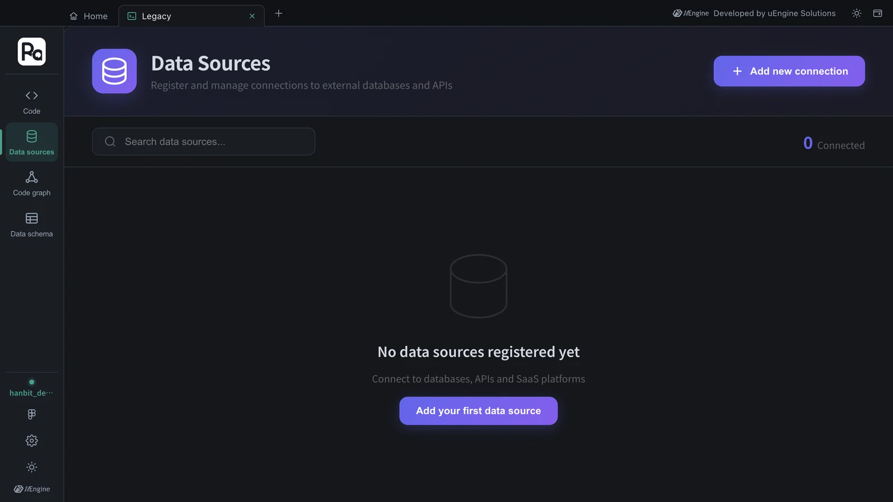
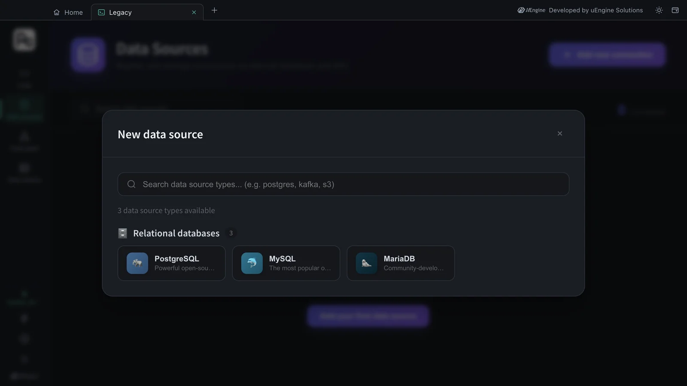
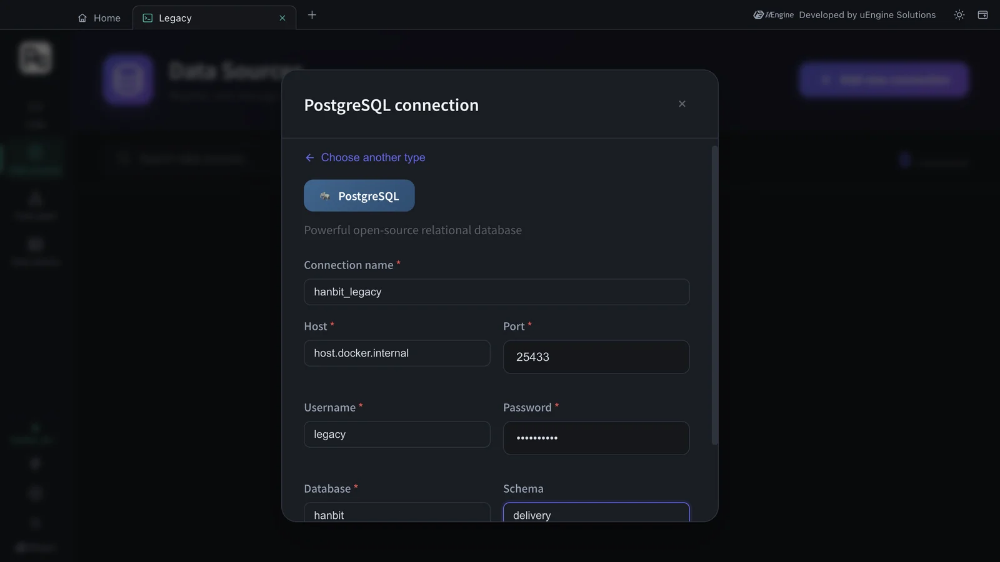
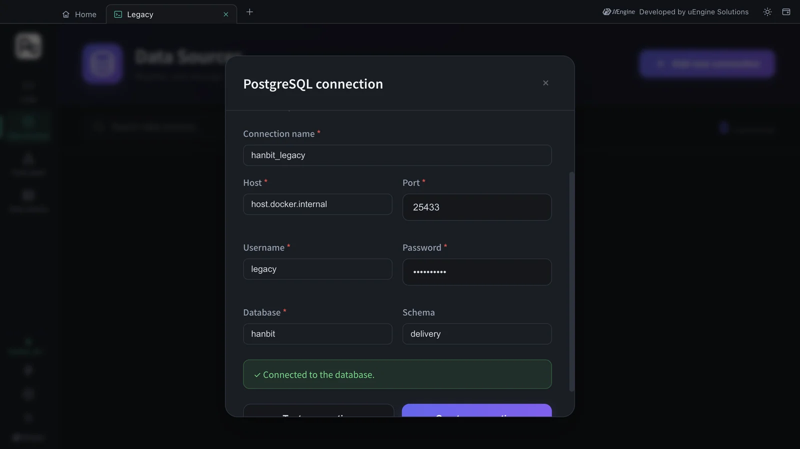
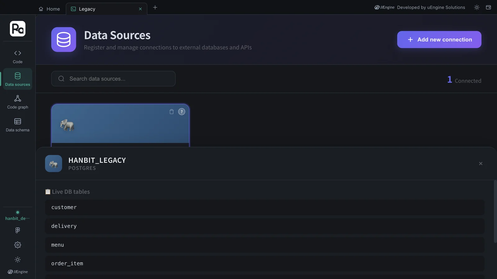
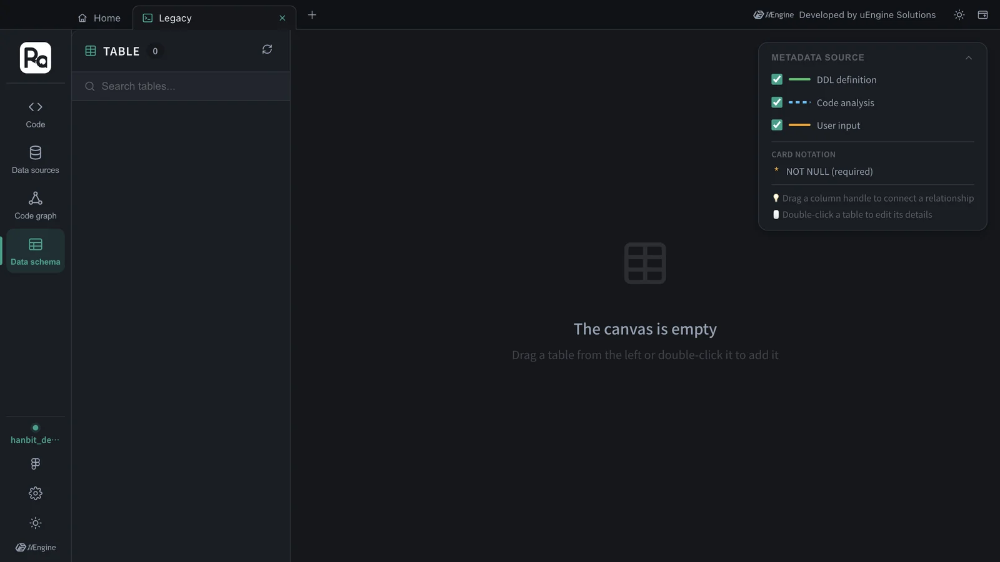

Register the old order DB (PostgreSQL) that Hanbit Delivery uses today as a data source in the Legacy tab. Once you test and create the connection, the DB's real tables show up right away, and this connection becomes the source for legacy analysis and the data schema.
Why data sources#
A new system isn't built on empty ground. Hanbit Delivery already has an old DB holding stores · menus · orders · deliveries, and the new design has to fit with it. If you design without knowing which tables exist or which values the order status is stored as, you'll get stuck when you migrate.
Robo Architect Lite comes with a data fabric (Ontological's fabric · catalog containers). Register your company's DB here once as a data source, and you can see its tables inside the app without opening the DB directly, while legacy analysis (Chapter 13) reads its structure.
| Legacy tab rail | What it does |
|---|---|
| Code | View the old system's source code · DDL folder and start an analysis (Chapter 13) |
| Data sources | Register · test DB connections and see the real tables (this chapter) |
| Code graph | Call · reference relationships of the analyzed code |
| Data schema | Tables, columns and relationships on a canvas. Filled from DDL definitions · code analysis · user input |
Hands-on 1 — Start the practice legacy DB#
For the exercise you'll use a small PostgreSQL that imitates Hanbit Delivery's old order DB. It has seven tables (store stores · menu menu items · customer customers · orders orders · order_item order items · rider riders · delivery deliveries) and sample data.
- Download legacy-delivery.sql.
- Start a PostgreSQL container in a terminal (you installed Docker Desktop in Chapter 1).
docker run -d --name ra-tut-legacy-pg \ -e POSTGRES_USER=legacy -e POSTGRES_PASSWORD=legacy1234 -e POSTGRES_DB=hanbit \ -p 127.0.0.1:25433:5432 postgres:16-alpine - A few seconds later, load the schema and data from the folder where you downloaded the file.
docker exec -i ra-tut-legacy-pg psql -U legacy -d hanbit < legacy-delivery.sql docker exec ra-tut-legacy-pg psql -U legacy -d hanbit -c '\dt delivery.*' - When the last command lists the 7 tables of the
deliveryschema (customer…store), you're ready.
Port 25433
Your PC may already have PostgreSQL running on port 5432, so the practice DB uses 25433. Because of the 127.0.0.1: prefix, it can't be reached from outside this PC.
Hands-on 2 — Register the data source#
- On Home, open the Legacy · Data Sources card. The Legacy tab's rail has only the Legacy menu — Code · Data sources · Code graph · Data schema.
- Click Data sources. At first it says “No data sources registered yet”, and the count at the top right is 0 Connected.

- Click Add new connection, and the New data source dialog shows the types you can use. For now, these are three relational databases (PostgreSQL · MySQL · MariaDB). Choose PostgreSQL.

- In the PostgreSQL connection dialog, enter the following.
| Field | Value | Note |
|---|---|---|
| Connection name | hanbit_legacy |
The name used inside the app |
| Host | host.docker.internal |
The data fabric runs inside a container, so to point to your PC use this name instead of localhost |
| Port | 25433 |
The port you opened in Hands-on 1 |
| Username / Password | legacy / legacy1234 |
|
| Database | hanbit |
|
| Schema | delivery |
If left empty, public is used |

- Click Test connection. When “✓ Connected to the database.” appears, click Create connection.

If you put localhost in Host
The connection test fails. localhost inside a container is the data fabric container itself. For a DB on another server, like a company DB, use that server's address as it is.
Hands-on 3 — See the real tables#
- A
hanbit_legacycard (POSTGRES,host.docker.internal·hanbit) appears in the list, and the count at the top right becomes 1 Connected. - Click the card, and the Live DB tables panel opens below with the tables of the
deliveryschema.

The tables in this tutorial were the seven customer · delivery · menu · order_item · orders · rider · store, the same ones you loaded in Hands-on 1. The app connected to the DB directly and read the list.
When does the data schema fill up?#
Click Data schema on the rail, and it still shows TABLE 0 and “The canvas is empty”. As the METADATA SOURCE legend on the right (DDL definition · Code analysis · User input) suggests, this canvas is filled with the results of analyzing the old system's DDL and code. You do the analysis in Chapter 13, “Analyze legacy code”.

Old DB and new design side by side
In the Chapter 5 plan, the Order aggregate starts in “Awaiting acceptance” (the constitution's Placed state) and moves only to Accepted or Cancelled. The old orders.status holds values such as DELIVERED · DELIVERING · COOKING · REJECTED. How to map these values when you migrate is a good topic for the next proposal.
What to check#
hanbit_legacyis in the data source list, showing “1 Connected”.- Clicking the card shows the 7 live DB tables.
Quiz#
- Why do you use
host.docker.internalinstead oflocalhostin the Host field? - What's the difference between Test connection and Create connection?
- You registered a data source, but the data schema is empty. Is it broken?
Answers
- Because the side that connects to the DB is the data fabric inside a container. Inside a container,
localhostis that container itself, and your PC ishost.docker.internal. - Test connection only tries to connect with the values you entered; Create connection registers that connection as a data source.
- No. The data schema is filled by DDL · code analysis (Chapter 13) or user input. Registering alone shows the list in the live DB tables panel.